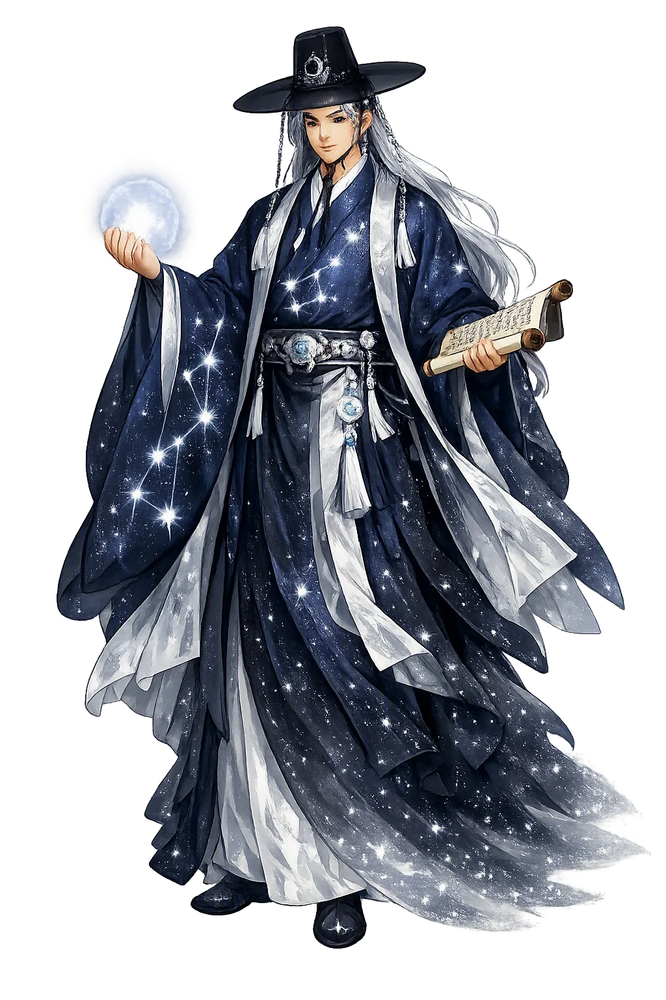
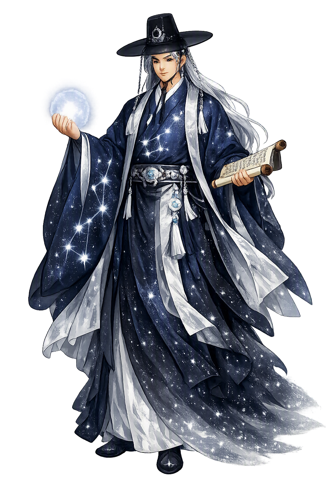

The Living Myth
Seven Stars, Ursa Major · The seven stars of the north

Stories of Chilsong
No epic tells Chilsong's story; the sources are court protocol, monastic liturgy, and village custom, and on one point they agree — the seven lights of the northern sky keep each person's days. What follows is attested in Joseon-era records, Buddhist ritual, and the folklore collections of the National Folk Museum of Korea. Where the traditions diverge, the divergence is itself instructive.
In Korean folk religion, as recorded in the collections of the National Folk Museum of Korea, the seven stars of the Big Dipper are not lights but officials: Chilseongsin, the star spirits, who keep the register of every life beneath the northern sky. When a child is born, the days are written in the Dipper's book; when a life nears its term, the household may appeal. The appeal has a fixed liturgy — the shaman's Chilseong-gut, in which the seven spirits are invoked and petitioned with rice, clean cloth, and lamps set out in the pattern of the stars. The rite does not beg an unknowable heaven; it negotiates with a bureaucracy whose office is overhead, whose hours are marked by the Dipper's slow circuit of the pole. The constellation is imagined less as distant fire than as a court of record — a sky that keeps books on every life below it, and can, on the strength of a good petition, amend them.
When crisis struck the Joseon dynasty — invasion, epidemic, a comet over the palace — the court did not appeal to heaven in the abstract; it addressed the seven stars by name. The uigwe, the royal protocols of the Joseon court, prescribe the Ch'ilseongnan (七星難), the rite for averting the calamity of the seven stars, performed by the king and his ministers in the palace precinct to turn aside the disasters the Dipper was believed capable of sending upon the state. Buddhist monks chanted stellar liturgy while officials processed with offerings — a distinctly Korean arrangement in which the stars received the honors of temple and throne in a single ceremony. Kim Seong Uk's study of these rites shows how thoroughly stellar worship was woven into Joseon state ideology: the dynasty treated the Big Dipper as a power whose goodwill was a matter of national security, to be courted with the same protocol it offered its own ancestors.
Korean birth custom preserves the Dipper's jurisdiction over the cradle. For twenty-one days after a birth — the samchil, the “three sevens” — mother and child were secluded, and folklore collections from every province record the reason: the seven star spirits visit the house on the seventh, fourteenth, and twenty-first nights to inspect the newborn and confirm the span of days allotted to it. A mother who crossed the threshold or handled a blade risked drawing the stars' attention to the child's account. On the twenty-first day the seclusion ended with rice cakes shared among the neighbors — the household re-entering the world only after the last audit. Grayson notes that such customs made the stars' book-keeping tangible at the most vulnerable threshold of life: the Dipper's first inscription of a person happens not at death but at the cradle, and for three weeks the whole village behaves as though the sky were watching.
Buddhism, arriving in Korea, did not abolish the star spirits — it gave them architecture. Korean monasteries built Chilsong-gak, “halls of the seven stars,” set often apart from the main precinct, where monks chant petitions for longevity and protection; the Chilsong-jae rite seats the seven stars within the Buddhist cosmos as benevolent deities alongside the guardians of the directions. In the shaman's gut the same spirits descend to the drum — the Chilseong-gut is among the most musically elaborate of Korean shamanic rites. The sources preserve no epic of the seven stars, and they disagree on details of office and identity; but on the practice all three traditions — Buddhist, courtly, and shamanic — concur. The Dipper belongs to everyone at once, which is the surest sign of how deeply it belongs: a name so common that temple, palace, and village hut each keep a copy.
celestial spirits of the Big Dipper, longevity, and fate
Chilsong — 七星, “seven stars” — is the Korean name of the Big Dipper, worshipped as a family of celestial spirits, Chilseongsin, who keep the register of human life and death. Buddhist rites, Joseon court protocol, and village shamanic custom all address the same seven lights circling the pole above the northern sky.
Chilseongsin are the seven star gods as a single household of spirits — patrons of the newborn, the sick, and the dying in Korean folk religion.
The Dipper circles the pole without setting; Korean star lore reads its circuit as the turning wheel of each person's allotted span of days.
Offerings to the seven stars petition for added years: court protocols and village rites alike ask the Dipper to extend a life nearing its term.
Korean monasteries built Chilsong-gak shrine halls where monks chant for the stars' protection — stellar spirits seated within a Buddhist pantheon.
From the original script to the living URL
칠성 (七星)
The name in its original Korean form. Chilsong (칠성 (七星)) is attested in the source tradition — “Seven stars”. Its original diacritics and script distinctions carry the full phonetic and orthographic weight of the source tradition.
chilsong
The plain chilsong form is identical to the Unicode restoration. Because this name is already written in Latin letters, no diacritics, stress, or script information were lost — only capitalization differs.
Chilsong
The Unicode restoration does not need to recover lost marks for Chilsong. Its value is canonical spelling and consistent cataloguing, not the reconstruction of erased orthography. The domain is readable as-is to both DNS and humanity.
Chilsong.com
This restoration is written entirely in ASCII letters — no Punycode encoding stands between Chilsong and the DNS. The domain reads identically to machines and to human eyes.
Owned, ideal, and ASCII forms of Chilsong
Chilsong
Restores 칠성 (七星). The full Unicode restoration. chilsong.com is not in the PuniCodex collection — it is watched for release; if it drops, this temple upgrades to an owned flagship.
How Chilsong was spoken
How Chilsong travels from ancient script to the modern URL
A name like Chilsong looks like a description, but it hides a revolution. To name the seven stars is to move them from scenery to staff — from lights overhead to officials on duty, keeping the one ledger no household can keep for itself: the count of its days. Every tradition that adopted the Dipper accepted that implication. The Buddhist hall, the palace protocol, and the village gut disagree about ritual detail, but all three proceed from the same astonishing premise: that the sky keeps books, and that books can be petitioned. What the restoration Chilsong commemorates is therefore not a star pattern anyone can see, but an institution — perhaps the oldest continuously maintained bureaucracy in Korean religious life, headquartered seven lights above the pole, still accepting appeals. The ASCII form loses nothing visible, no accent and no exotic letter, and exactly in losing nothing it loses everything: the recognition that this is a proper name, a title of office, the signature on the world's oldest ongoing case file.
Enter Extended Lore